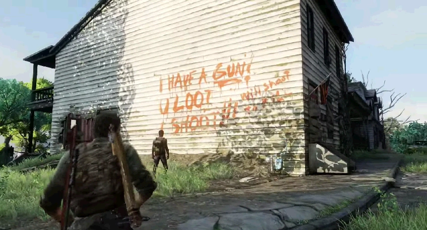

содержание
Пригород
Пригород
Глава
Глава

Сезон: лето
Подглавы:
Канализация,
Пригород
Локация:
Питтсбург
Персонажи:
Джоэл, Элли, Генри, Сэм, Иш (упом.), Сьюзен (упом.),
Кайл (упом.), Кара (упом.)
Мультиплеер
Артефакты:
10
Учебники:
2
Комиксы:
2
Медальоны «Цикад»:
4
Хронология
Предыдущая глава:
Питтсбург
Следующая глава:
Дамба Томми
«Пригород» - шестая глава в Одни из Нас (англ. The Last of Us).
Джоэл приходит в себя и обнаруживает, что находится на берегу. Элли, как оказывается, в порядке, но вместе с ней, он замечает Генри и Сэма. Старший брат рад, что с Джоэлом все хорошо, но контрабандист оказывает противоположные эмоции. Он нападает на Генри, обвиняя за то, что тот бросил их в городе. Генри удается остудить пыл Джоэла, уточняя, что если бы в такой ситуации оказался сам Джоэл, он поступил бы точно также, не говоря уже о том, что именно старший брат спас почти утонувших героев. Выяснив отношения, группа снова объединяет усилия, и теперь пытается найти выход с пляжа, на котором они также находят севшое на мель судно, которое принадлежало Ишу, очередному выжившему.
Четверка находит огромный проход в систему канализаций, закрытый тяжеловесной решеткой. Генри уверен, что данная система выведет их прямиком к радиовышке. Пройдя не малые разветвления, запустив генератор для автоматизированного трапа, чтобы перебраться через помещение, затопленное водой: так как Сэм, наряду с Элли, не умели плавать. Группе удается добраться до двойных дверей, окрашенных, в ввиде разноцветного замка. Открыв двери, срабатывает ловушка, вызывающая громкий шум. Генри успокаивает Джоэла, убедив, что это типичная шумовая ловушка, которая должна сигнализировать о появлении незваных гостей. Проходя в глубь коридоров и туннелей, они обнаруживают, что некогда в этих помещениях существовала целая община. Детям даже удается пробить пенальти, обнаружив самодельные ворота и целый мяч. Но раздавшиеся щелкающие звуки вынуждают группу затихнуть. Джоэл подмечает, что раз в рядах зараженных есть щелкуны, значит заражение поглотило людей достаточно давно. Более того, в одном из помещений, они обнаруживают несколько скелетов, прикрытые одеждой, с надписью на полу: "они не страдали". Наряду с этим, герои обнаруживают записку, в которой находят подтверждение своим доводам: один из "воспитателей", дабы избежать заражения детей и их дальнейшее превращение в бегунов, решился застрелить всех.
Продолжая свой путь, группа выбирается на лестничный пролет, где обрушился потолок, однако выбраться из него невозможно, слишком уж большая высота. Джоэл открывает сетчатую дверь, не сознательно активируя очередную ловушку, которая разделяет группу на двое: Генри и Элли, Джоэл и Сэм, так как, за доли секунды, огромный железный затвор обрушивается с потолка, полностью перекрыв проход. Имея считанные секунды осознать произошедшее и как-то отреагировать, Генри и Элли приходится спасаться бегством от большого количества набежавших на шум щелкунов. Оставшись с Сэмом, Джоэл продолжает путь. Они обнаруживают огромное помещение, где и обитала вся община, где было все для всего: для сна, для мытья, для нужд личной гигиены, для воспитания и ухода за детьми, хранения припасов и боеприпасов. Не без боя с заражёнными, паре приходится пробиваться к выходу, где, спрыгнув с выступа, они воссоединяются с другой половиной группы. Но для радости нет времени, их все еще преследуют зараженные. Забравшись по лестничному пролету до верхних помещений, взрослым приходится отбиваться, пока младшие члены группы пытаются отпереть дверь, запертую с другой стороны. После нелегкого боя, Генри и Джоэлу удается выбраться, и они обнаруживают себя на улице, на: "свежем воздухе".
Сбежав через деревянный забор, героям удается все-таки добраться до радиовышки. Имея возможность хорошенько отдохнуть, Джоэл и Генри делятся байками, где первый ведает юнцу историю о том, как он и Томми арендовали пару Харлеев, и колесили по стране. Элли откланивается, дабы навестить Сэма, который якобы занимался инвентаризацией найденных припасов. Как только девочка покидает их, Генри делает заметку, что возможно им с Сэмом не суждено встретить своих людей снова.
Тем временем, Элли и Сэм делятся своими страхами, достижениями, и обсуждают возможность зараженных все еще быть людьми. Сначала Элли с юмором пытается отклониться от вопроса, но потом отвечает отказом в веру, что зараженные остаются людьми. Элли отмечает, что боится остаться одной, а для Сэма страхом является вероятность стать одним из зараженных. Прежде чем попрощаться на ночь, Элли достает робота-игрушку, которого Сэм хотел взять еще в Питтсбурге, со словами: «если он [Генри] не узнает, то и не сможет забрать». Как только Элли покидает комнату, Сэм бросает робота и поднимает штанину, обнажая след от укуса.
Утром Элли просыпается от запаха еды на завтрак, который готовил Генри. Она уточняет, где Сэм, на что Генри отвечает, что позволил тому выспаться сегодня, и предлагает ей разбудить его. Войдя в комнату Сэма, Элли вскрикивает и вылетает из комнаты, так как Сэм внезапно нападает на девочку, уже будучи зараженным. Джоэл тянется за оружием, но Генри его останавливает, наставив пистолет. Генри стоит в ступоре, и Джоэл снова тянется к пистолету, и только успев его схватить, раздается выстрел - выстрел в голову Сэма, сделанный собственным старшим братом. Шокированный произошедшим, он винит во всем Джоэла, но вскоре, не выдержав эмоций, выстреливает себе в голову.
Глава «Питтсбург» содержит следующие предметы коллекционирования:
Сюжет
Канализация
Джоэл приходит в себя и обнаруживает, что находится на берегу. Элли, как оказывается, в порядке, но вместе с ней, он замечает Генри и Сэма. Старший брат рад, что с Джоэлом все хорошо, но контрабандист оказывает противоположные эмоции. Он нападает на Генри, обвиняя за то, что тот бросил их в городе. Генри удается остудить пыл Джоэла, уточняя, что если бы в такой ситуации оказался сам Джоэл, он поступил бы точно также, не говоря уже о том, что именно старший брат спас почти утонувших героев. Выяснив отношения, группа снова объединяет усилия, и теперь пытается найти выход с пляжа, на котором они также находят севшое на мель судно, которое принадлежало Ишу, очередному выжившему.
Четверка находит огромный проход в систему канализаций, закрытый тяжеловесной решеткой. Генри уверен, что данная система выведет их прямиком к радиовышке. Пройдя не малые разветвления, запустив генератор для автоматизированного трапа, чтобы перебраться через помещение, затопленное водой: так как Сэм, наряду с Элли, не умели плавать. Группе удается добраться до двойных дверей, окрашенных, в ввиде разноцветного замка. Открыв двери, срабатывает ловушка, вызывающая громкий шум. Генри успокаивает Джоэла, убедив, что это типичная шумовая ловушка, которая должна сигнализировать о появлении незваных гостей. Проходя в глубь коридоров и туннелей, они обнаруживают, что некогда в этих помещениях существовала целая община. Детям даже удается пробить пенальти, обнаружив самодельные ворота и целый мяч. Но раздавшиеся щелкающие звуки вынуждают группу затихнуть. Джоэл подмечает, что раз в рядах зараженных есть щелкуны, значит заражение поглотило людей достаточно давно. Более того, в одном из помещений, они обнаруживают несколько скелетов, прикрытые одеждой, с надписью на полу: "они не страдали". Наряду с этим, герои обнаруживают записку, в которой находят подтверждение своим доводам: один из "воспитателей", дабы избежать заражения детей и их дальнейшее превращение в бегунов, решился застрелить всех.
Продолжая свой путь, группа выбирается на лестничный пролет, где обрушился потолок, однако выбраться из него невозможно, слишком уж большая высота. Джоэл открывает сетчатую дверь, не сознательно активируя очередную ловушку, которая разделяет группу на двое: Генри и Элли, Джоэл и Сэм, так как, за доли секунды, огромный железный затвор обрушивается с потолка, полностью перекрыв проход. Имея считанные секунды осознать произошедшее и как-то отреагировать, Генри и Элли приходится спасаться бегством от большого количества набежавших на шум щелкунов. Оставшись с Сэмом, Джоэл продолжает путь. Они обнаруживают огромное помещение, где и обитала вся община, где было все для всего: для сна, для мытья, для нужд личной гигиены, для воспитания и ухода за детьми, хранения припасов и боеприпасов. Не без боя с заражёнными, паре приходится пробиваться к выходу, где, спрыгнув с выступа, они воссоединяются с другой половиной группы. Но для радости нет времени, их все еще преследуют зараженные. Забравшись по лестничному пролету до верхних помещений, взрослым приходится отбиваться, пока младшие члены группы пытаются отпереть дверь, запертую с другой стороны. После нелегкого боя, Генри и Джоэлу удается выбраться, и они обнаруживают себя на улице, на: "свежем воздухе".
Пригород
Группа продолжает свой путь через квартал пригородных домов, наслаждаясь видами. На самом деле, это был момент для восстановления сил и морального духа, где дети играли, исследовали, и делали заметки касательно метки Цикад, свидетельствующие о том, что некогда по данному пути проходили их отряды. Пытаясь выбраться в прилегающий район, засевший в верхних этажах снайпер застает группу врасплох. Джоэл приказывает остальным оставаться в укрытии, а сам решает обезвредить снайпера. Когда ему это удается, он вынужден теперь прикрывать своих союзников от волны охотников, злосчастного Хамви, и зараженных, не без опасных моментов получить укус.Сбежав через деревянный забор, героям удается все-таки добраться до радиовышки. Имея возможность хорошенько отдохнуть, Джоэл и Генри делятся байками, где первый ведает юнцу историю о том, как он и Томми арендовали пару Харлеев, и колесили по стране. Элли откланивается, дабы навестить Сэма, который якобы занимался инвентаризацией найденных припасов. Как только девочка покидает их, Генри делает заметку, что возможно им с Сэмом не суждено встретить своих людей снова.
Тем временем, Элли и Сэм делятся своими страхами, достижениями, и обсуждают возможность зараженных все еще быть людьми. Сначала Элли с юмором пытается отклониться от вопроса, но потом отвечает отказом в веру, что зараженные остаются людьми. Элли отмечает, что боится остаться одной, а для Сэма страхом является вероятность стать одним из зараженных. Прежде чем попрощаться на ночь, Элли достает робота-игрушку, которого Сэм хотел взять еще в Питтсбурге, со словами: «если он [Генри] не узнает, то и не сможет забрать». Как только Элли покидает комнату, Сэм бросает робота и поднимает штанину, обнажая след от укуса.
Утром Элли просыпается от запаха еды на завтрак, который готовил Генри. Она уточняет, где Сэм, на что Генри отвечает, что позволил тому выспаться сегодня, и предлагает ей разбудить его. Войдя в комнату Сэма, Элли вскрикивает и вылетает из комнаты, так как Сэм внезапно нападает на девочку, уже будучи зараженным. Джоэл тянется за оружием, но Генри его останавливает, наставив пистолет. Генри стоит в ступоре, и Джоэл снова тянется к пистолету, и только успев его схватить, раздается выстрел - выстрел в голову Сэма, сделанный собственным старшим братом. Шокированный произошедшим, он винит во всем Джоэла, но вскоре, не выдержав эмоций, выстреливает себе в голову.
Коллекционные материалы
Глава «Питтсбург» содержит следующие предметы коллекционирования:
- Артефакты - 10
- Записка о корабле - в кабине управления кораблем, севшем на мель. Рядом с комиксом Дикие Звезды: Античастицы.
- Записка о канализации - когда пути разойдутся, и Генри с Сэмом пойдут по левому туннелю, а Джоэл с Элли по правому, необходимо позволить Элли проползти через вентиляцию и открыть решетчатую дверь. Записка будет находиться в дальнем конце комнаты на столе.
- Записка о торговле - в комнате с двумя щелкунами, в районе где необходимо сбросить деревянную платформу, чтобы помочь Элли перебраться на другую сторону резервуара.
- Записка о дождевых баках - в районе первого нападения щелкунов и бегунов, вверх по лестнице в комнате с голубыми цистернами.
- Записка окруженного - также в пределах первого нападения зараженных, после продвижения вверх по лестничному пролету, за небольшим завалом слева будет дверь, за ней, в помещении, сама записка.
- Детский рисунок - в детском корпусе основного места обитания общины Иша, где будет проходить основной бой со сталкерами.
- Записка о грабителях - на втором этаже первой линии домов, когда герои выберутся из канализации на "свежий воздух".
- Записка отца - в том же доме, где можно найти Справочник по холодному оружию, том 2, в соседней комнате на комоде.
- Записка выжившего - в соседней комнате от места, где можно найти Дикие Звезды: Носитель информации, в доме, напротив которого играют собаки, на втором этаже.
- Пакет со спичками - на третьем этаже того же здания, на полке у лестницы.
- Медальоны Цикад - 4
- Джош Шеффлер (000127) - в трюмо корабля, где расположены сети и ловушки для крабов.
- Роберт Ригхетти (000219) - попав в канализацию, держась правой стороны, необходимо залезть в ближайший слив. Медальон находится в примыкающем к сливу помещении, под водой.
- Эдди Фюентес (000158) - когда герои попадут в затопленный резервуар с платформой, медальон будет находится под водой у затопленной машины, покрытой растительностью.
- Мэттью Уайт (000118) - на ветке дерева, которое находится во внутреннем дворике с детской площадкой, у дома, напротив которого играли собаки.
- Справочники - 2
- Справочник по бомбам, том 1 - войдя на территорию общины, не доходя до самодельных футбольных ворот, на полке ближайшего стенда слева.
- Справочник по холодному оружию, том 2 - в одном из следующих домов (по второй линии), на втором этаже будет люк на чердак. Необходимо помочь Элли взобраться туда и, в конечном итоге, она достанет данный справочник.
- Комиксы - 2
- Дикие Звезды: Античастицы - в кабине управления кораблем, севшим на мель. Рядом с запиской о корабле.
- Дикие Звезды: Носитель информации - в доме, напротив которого играют собаки, на втором этаже в туалете.
Необязательные разговоры
- Следуя по дороге, около отдельно стоящего дома с надписью "Will Shoot on Sight".
- У грузовичка с мороженным, трудно пропустить.
- В самом последнем по очередности доме, в комнате с доской для игры в дартс. Необходимо дождаться пока сыграют Сэм и Элли.
Интересные факты
- Щелкун, нападающий на Сэма, неубиваем, пока он не повалит Сэма.
- После того как герои вошли в канализацию несколько фраз Генри в русской локализации будет озвучивать другой человек.
- В ранней версии игры в канализации вместо «Коротыша» должен был быть огнемёт.
- Если дать охотнику с коктейлем Молотова в броневике сжечь Элли, Генри и Сэма, то после их смерти Джоэл уберет глаз от прицела и скажет: "Господи". Это единственный раз, когда персонаж говорит что-то после незапланированной смерти другого.
- Также, если во время прикрытия группы дать охотникам убить Генри, то камера перенесется в незаконченную комнату (будет видно много мест, где отсутствуют текстуры), копирующую ту же улицу, на большой ракурс, и будет видно, как Генри погибает от ножа охотника.